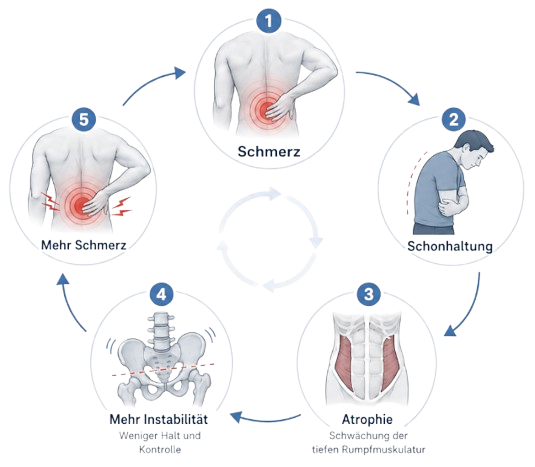
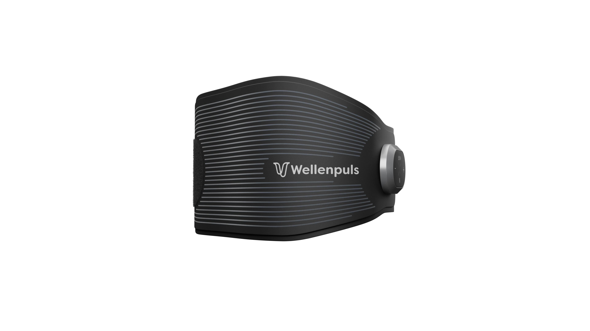

Liebe Leserin, lieber Leser,
vielleicht kennen Sie das.
Sie wachen auf und bleiben erst einmal liegen. Sie horchen in sich hinein, wie es heute wird. Dann drehen Sie sich auf die Seite, schieben die Beine aus dem Bett und drücken sich mit dem Arm hoch, weil es anders nicht geht.
Die ersten Schritte ins Bad gehen Sie leicht gebückt. Nach zehn Minuten wird es besser. Das wissen Sie inzwischen.
Nach einer Stunde Stehen in der Küche zieht es im unteren Rücken. Beim Einkaufen auch, spätestens in der Schlange an der Kasse. An schlechten Tagen zieht es bis ins Gesäß und das Bein hinunter.
Im Restaurant suchen Sie zuerst den Stuhl aus und dann das Essen.
Nachts werden Sie wach, weil Sie sich umdrehen müssen. Gegen vier liegen Sie da und suchen eine Lage, in der es geht.
Und wenn jemand fragt, sagen Sie: „Ach, mein Rücken ist halt nicht mehr der beste.“ Als käme das mit den Jahren eben so.
Ich habe das vier Jahre lang gesagt.
Ich bin Lehrerin und 61 Jahre alt. Sechs Stunden stehe ich vor der Klasse, danach sitze ich über den Korrekturen. Abends lag ich flach auf dem Sofa, weil nichts anderes mehr ging.
An den Wochenenden habe ich gerechnet. Gehe ich mit meiner Enkelin in den Park, oder schone ich mich, damit ich die Woche durchstehe? Ich habe mich öfter für die Woche entschieden, als ich zugeben möchte.
An den Schmerz hatte ich mich fast gewöhnt. Schlimmer war etwas anderes. Meine Enkelin Lena fragte, ob wir auf den Spielplatz gehen, und ich wusste die Antwort schon, bevor sie ausgeredet hatte. Dann habe ich ihr Gesicht gesehen, als ich Nein sagte.
Dabei habe ich alles gemacht, was man mir gesagt hat.
Ich war bei der Physiotherapie. Erst sechs Termine, dann noch einmal sechs, irgendwann habe ich aufgehört zu zählen. Die Übungen habe ich morgens vor der Schule gemacht, auf der Matte im Wohnzimmer, während mein Mann noch schlief.
Ich hatte Wärmepflaster in der Handtasche und Schmerztabletten im Nachttisch. Ich habe einen Rückenkurs an der Volkshochschule belegt und eine neue Matratze gekauft. Vom Orthopäden hatte ich sogar so ein Kribbelgerät mit Klebepads. Das half für zwei Stunden.
Jedes Mal wurde es kurz besser. Dann kam es wieder.
Lange dachte ich, ich müsste einfach noch mehr tun. Noch regelmäßiger üben, noch öfter zur Physiotherapie gehen, mich mehr zusammenreißen.
Heute weiß ich, dass mir die ganze Zeit ein Stück vom Bild gefehlt hat. Niemand hatte mit mir darüber gesprochen. Dieses Stück ist der Grund, warum ich heute zweimal in der Woche einen Gurt trage, den ich am Anfang für Unsinn gehalten habe.
Ich schreibe Ihnen das, weil ich vier Jahre lang an der falschen Stelle gesucht habe. Wenn Sie üben, zur Physiotherapie gehen und Tabletten nehmen, und es kommt trotzdem immer wieder, dann liegt das sehr wahrscheinlich nicht an Ihrer Disziplin.
Warum Sie alles richtig machen und es trotzdem wiederkommt
Rückenübungen trainieren die Muskeln, die Sie bewusst anspannen können. Das sind die Muskeln, die Sie bei der Brücke spüren oder im Vierfüßlerstand. Sie liegen nah an der Oberfläche und reagieren, wenn Sie es wollen.
Die Muskeln, die Ihre Wirbelsäule halten, liegen tiefer. Sie sitzen direkt an den Wirbeln und in der seitlichen Bauchwand. Diese Muskeln können Sie kaum bewusst anspannen. Sie arbeiten von allein, wenn Sie stehen, gehen und sitzen, und Sie merken nichts davon.
Bei vielen Menschen mit Rückenproblemen arbeiten sie kaum noch.
Das hat Christian Senfleben untersucht, ein Sportwissenschaftler von der Deutschen Sporthochschule Köln. Bei Menschen mit anhaltenden Beschwerden im unteren Rücken ist ausgerechnet diese tiefe Muskulatur häufig stark geschwächt.
Sie hat sich dann so weit zurückgebildet, dass der Körper sie kaum noch ansteuert. Ihre Arbeit übernehmen andere. Die Muskeln an der Oberfläche springen ein und verkrampfen dabei. Die Bandscheiben bekommen mehr Druck ab. Die Wirbelsäule muss ohne ihre eigene Stütze auskommen.
Sie können also jeden Morgen üben und zweimal die Woche zur Physiotherapie gehen. Solange die tiefen Muskeln dabei kaum mitarbeiten, bleibt das Problem dort, wo es sitzt.
Mir hat ein Bild geholfen. Wenn in einer Wand ein Wasserschaden steckt, können Sie die Stelle jedes Jahr neu streichen. Eine Weile sieht die Wand gut aus. Dann kommt der Fleck wieder durch.
So ging es mir mit meinem Rücken. Ich habe vier Jahre lang gestrichen.
Warum es mit den Jahren schlimmer wird
Das zweite Stück hat mich richtig getroffen, als ich es zum ersten Mal gelesen habe.
Wenn der Rücken wehtut, schützt sich der Körper. Die Muskeln rund um die Stelle spannen sich an und halten alles fest. Sie selbst fangen an, sich zu schonen. Sie bücken sich seltener, Sie tragen weniger, Sie lassen den langen Spaziergang weg.
Für ein paar Tage ist das richtig. Schwierig wird es, wenn dieser Schutz nicht mehr aufhört.
Die Muskeln an der Oberfläche halten jetzt dauernd fest. Die tiefen Muskeln werden noch weniger gebraucht, und was der Körper nicht braucht, baut er ab. Der Rücken verliert Halt. Er meldet sich schneller, also schonen Sie sich noch mehr.

So dreht sich das im Kreis, oft über viele Jahre. Physiotherapie, Wärme und Tabletten lindern für eine Weile. Den Kreis halten sie nicht an, solange die tiefen Muskeln schwach bleiben.
Deshalb sagen so viele nach Jahren denselben Satz: „Es wird kurz besser, und dann kommt es wieder.“ Bei mir waren es die Wochen nach jeder Physiotherapie. Drei, vier Wochen ging es gut, dann stand ich wieder am Anfang.
Lange habe ich die Schuld bei mir gesucht. Zu wenig Bewegung, zu viel Sitzen, zu viel Stress in der Schule, zu wenig Durchhalten.
Als ich das mit den tiefen Muskeln verstanden hatte, war ich zuerst gar nicht erleichtert. Ich war wütend. Vier Jahre Physiotherapie, viel Geld, unzählige Morgen auf der Matte. Und niemand hatte mir gesagt, dass meine Übungen an diesen Muskeln fast vorbeigehen.
Was ich über Strom gelernt habe
Beim Lesen bin ich auf etwas gestoßen, das ich zuerst nicht ernst genommen habe: Elektrostimulation.
Ich dachte an mein Kribbelgerät vom Orthopäden und an die Bauchgürtel aus der Fernsehwerbung. Dann habe ich gelesen, dass das drei verschiedene Dinge sind.
TENS legt einen schwachen Strom über die Schmerzsignale. Das kann für ein paar Stunden lindern. Die Muskeln trainiert es nicht. So ein Gerät hatte ich vom Orthopäden.
EMS-Gürtel aus der Werbung lassen Bauch, Po oder Beine kräftig zucken. Gemacht sind sie für Fitness und Figur.
NMES, die neuromuskuläre Elektrostimulation, setzen Kliniken und Rehazentren seit Jahrzehnten ein, zum Beispiel nach Operationen oder nach langer Bettruhe. Ein Impuls bringt den Muskel dazu, sich anzuspannen, auch wenn man selbst still sitzt. Entscheidend ist, wo die Elektroden sitzen und welcher Muskel angesprochen wird.
NMES hilft also dort, wo der Körper einen Muskel selbst nicht mehr richtig anspannt. Das war bei mir die tiefe Muskulatur im unteren Rücken.
Nur gab es für den unteren Rücken lange kein Gerät, das dafür gebaut war. Was man kaufen konnte, war für Bauch und Beine gemacht oder für alles gleichzeitig.
Christian Senfleben brauchte für seine Studie in Köln ein Gerät, das die tiefe Muskulatur im unteren Rücken erreicht. Weil es keins gab, hat er es gebaut. Getestet hat er es mit 60 Teilnehmenden über acht Wochen. Danach wollten Teilnehmende die Prototypen kaufen, und daraus ist eine kleine Firma in Solingen geworden.
Das Gerät heißt Wellenpuls LWS. Es ist ein Gurt, den man um den unteren Rücken legt. Die Elektroden sind fest eingearbeitet und sitzen dort, wo die tiefe Muskulatur liegt.

Auch Fachleute setzen ihn ein. Das Gesundheitszentrum valmedica in Mülheim an der Ruhr hat ihn in seine Gesundheitsprogramme aufgenommen und schreibt dazu:
„Wellenpuls ergänzt unser Angebot um eine einfache, alltagstaugliche Möglichkeit, die Tiefenmuskulatur im Rumpf gezielt zu aktivieren. Die Anwendung ist niederschwellig und lässt sich super in unsere Betreuungskonzepte einfügen.“
Mein erster Gedanke: schon wieder so ein Gerät
Ich hatte schon eine Massagepistole, die nach drei Wochen im Schrank lag. Eine Akupressurmatte, die sich gut anfühlte und nichts änderte. Eine Rotlichtlampe, die für ein paar Stunden half.
Ich hatte keine Lust mehr, Hoffnung in Dinge zu stecken, die nach einem Monat in der Ecke stehen.
Dann habe ich mir angesehen, was der Gurt eigentlich macht. Zum ersten Mal seit Jahren passte etwas zu dem, was ich gerade über meinen Rücken gelernt hatte.
Der Wellenpuls ist ein Trainingsgerät. Er massiert nicht, und er betäubt nichts. Die Impulse gehen über die Haut an die Muskeln. Die Muskeln spannen sich an und lassen wieder los, so wie beim Training.
Ich selbst muss dafür nichts tun. Ich muss keine Haltung einnehmen und nicht spüren, ob ich gerade den richtigen Muskel treffe. Genau daran war ich bei meinen Übungen so oft gescheitert, ohne es zu merken.
Mit meinem alten Kribbelgerät hat das wenig zu tun. TENS überlagert den Schmerz, an den Muskeln ändert es nichts. Der Wellenpuls lässt sie arbeiten.
Wie stark der Impuls ist, stelle ich selbst ein. Es gibt 15 Stufen. An guten Tagen nehme ich mehr, an schlechten weniger.
Zweimal die Woche zwanzig Minuten. Das soll reichen?
Das war mein nächster Zweifel. Ich habe früher jeden Morgen geübt. Und jetzt sollten 40 Minuten in der Woche mehr bringen?
In der Studie wurde genau so trainiert: zweimal pro Woche, jeweils zwanzig Minuten, mit mindestens einem Tag Pause dazwischen. Der Muskel bekommt einen kräftigen Reiz und danach Zeit, sich zu erholen.
Es kommt darauf an, ob der Reiz bei den richtigen Muskeln ankommt. Zwanzig Minuten, die dort ankommen, bringen mir mehr als eine Stunde Übungen, die daran vorbeigehen.
Dazu kommt etwas ganz Praktisches. Ich muss mich nicht überwinden. Ich lege den Gurt an, setze mich aufs Sofa und schalte den Fernseher ein. Eine Wärmefunktion ist eingebaut. Nach zwanzig Minuten schaltet sich der Gurt von selbst ab.
An meinen Übungen bin ich oft gescheitert, weil nach einem langen Schultag keine Kraft mehr da war. Sitzen kann ich auch an einem schlechten Dienstag.

Die ersten Wochen
Ich hatte mir vorgenommen, nichts zu erwarten. Ich wollte nicht noch einmal enttäuscht werden.
Das Paket kam nach zwei Tagen. Dabei war eine Videoanleitung vom Gründer. Man feuchtet die Elektroden mit etwas Wasser an, legt den Gurt um, zieht den Klettverschluss fest und schaltet ein.
Die erste Woche
Beim ersten Mal fühlt es sich fremd an. Erst kribbelt es, dann wird ein Pulsieren daraus, und dann merkt man, wie sich die Muskeln zusammenziehen. Unangenehm fand ich es nicht.
Ich habe auf einer niedrigen Stufe angefangen, so wie es empfohlen wird. Mit der Wärme war es fast gemütlich. Mir war aber klar, dass ich höher gehen muss, damit ein Training daraus wird. Das habe ich in den nächsten Einheiten gemacht.
Nach der dritten Anwendung hatte ich am nächsten Tag Muskelkater. Tief im unteren Rücken und seitlich am Bauch, an Stellen, die ich nach meinen Übungen nie gespürt hatte. Da dachte ich zum ersten Mal: Diese Muskeln haben seit Jahren nichts mehr zu tun bekommen.
Die zweite und dritte Woche
Ich hatte gehofft, dass sich der Rücken weniger meldet. Zuerst habe ich etwas anderes gemerkt. Ich stand gerader, ohne daran zu denken.
Nach langem Sitzen kam ich leichter hoch. Das mühsame Aufrichten war nicht weg, aber es war anders. Der Rücken fühlte sich an, als hätte er wieder Halt von innen.
Mein Mann sah mich eines Abends an und fragte, ob ich neue Schuhe hätte. Ich hatte keine. Ich stand nur gerader.
Die vierte bis sechste Woche
An einem Dienstagabend rief Lena an. Ob wir am Samstag in den Tierpark gehen.
Ich habe Ja gesagt, bevor ich nachgedacht hatte. Erst nach dem Auflegen ist mir aufgefallen, dass ich diesmal nicht gerechnet hatte. Ich hatte mir nicht überlegt, wie ich danach den Sonntag überstehe.
Wir waren vier Stunden im Tierpark. Ein kurzes Stück habe ich Lena auf dem Arm getragen. Nach dem Picknick bin ich von der Bank aufgestanden, ohne mich abzustützen.
Abends auf dem Sofa war ich müde, so wie man nach einem schönen Tag müde ist. Ich konnte mich nicht erinnern, wann das zuletzt so gewesen war.
Woche sieben bis zwölf
Ich will hier nichts schönreden. Von großen Versprechen halte ich selbst nichts mehr.
Der Gurt hat nicht über Nacht alles geändert. Es gab keine Woche, nach der plötzlich alles gut war. Es ging langsam, so wie ein Geräusch leiser wird und man es erst später merkt.
Irgendwann um die siebte Woche bin ich morgens aufgestanden, und mein erster Gedanke galt nicht dem Rücken. Ich bin einfach aufgestanden und habe Kaffee gemacht.
In der Schule stehe ich wieder meine sechs Stunden, und abends ist noch etwas von mir übrig. Nach dem Abendessen stehe ich vom Tisch auf, ohne vorher Luft zu holen.
Mit Lena war ich wieder öfter auf dem Spielplatz. Einmal habe ich mich sogar mit auf die Schaukel gesetzt, weil sie so lange gebettelt hat.
Meine Übungen mache ich weiter. Sie fühlen sich weniger nach Pflicht an, seit ich merke, dass der Rücken mitmacht.
Die Tabletten liegen noch im Nachttisch. Ich denke nur viel seltener an sie.
Was andere schreiben
Hinter dem Wellenpuls steht kein Konzern. Es ist eine kleine Firma aus Solingen, und der Gründer antwortet selbst auf E-Mails. Bevor ich bestellt habe, habe ich die Bewertungen bei Google gelesen. Vier davon:
„Ich habe den Wellenpuls Gürtel mit als Erste Anfang Mai erhalten. Herr Senfleben hat ihn mir sogar persönlich vorbeigebracht, da er nicht weit weg wohnt. Er hat mir alles super erklärt, zum Beispiel, dass ich ihn schon stärker einstellen muss und nicht nur leicht kribbeln lassen. Ich bin momentan bei Stärke 10 von 15. Mir hat der Gurt geholfen und ich kann ihn nur empfehlen.“
„Ich und meine Frau sind sehr zufrieden und haben beide das Gefühl, dass sich der untere Rücken entspannter und deutlich gekräftigt anfühlt. Am Anfang etwas ungewohnt, doch schon nach wenigen Anwendungen traut man sich, richtig Gas zu geben, und man spürt die Muskeln arbeiten. Klare Kaufempfehlung!“
„Ich benutze den Gürtel seit über einem Jahr regelmäßig und ich bin richtig begeistert. Mein Rücken fühlt sich deutlich besser an. Das Tragen des Gürtels ist sehr angenehm. Top!“
„Der Wellenpuls Gurt ist wirklich eine tolle Unterstützung für meinen Rücken. Die Handhabung ist einfach, das Anlegen geht schnell, und durch die Wärme- und Intensitätsstufen kann ich es genau auf meine Bedürfnisse einstellen. Nach ein paar Anwendungen fühlt sich mein Rücken entspannter und kräftiger an.“
Mir ist beim Lesen aufgefallen, wie oft der Gründer selbst vorkommt. Das hat mir mehr Vertrauen gegeben als jedes Siegel.
Für wen das nichts ist
Ich kenne Ihre Vorgeschichte nicht. Und ich bin die Letzte, die Ihnen erzählt, dass ein Gerät alles löst.
Wenn Sie erwarten, dass Sie den Gurt umlegen und am nächsten Tag ist alles gut, lassen Sie es. Es ist ein Trainingsgerät, und Training braucht Wochen.
Wenn Sie ihn kaufen und in den Schrank legen, hilft er Ihnen so wenig wie mir meine Massagepistole.
Manche dürfen ihn gar nicht benutzen: Menschen mit Herzschrittmacher, mit Metallimplantaten im Rumpf, mit Epilepsie oder Herzrhythmusstörungen, Schwangere und Menschen mit stark veränderten Blutdruckwerten. Wenn Sie eine Erkrankung haben oder unsicher sind, fragen Sie vorher Ihre Ärztin oder Ihren Arzt.
Wenn Sie aber dort stehen, wo ich stand, wenn Sie vieles versucht haben und es immer wiederkommt, dann würde ich es an Ihrer Stelle ausprobieren.
Was beim Gurt anders ist als bei meinen alten Sachen
Zwei Kolleginnen haben mich im Lehrerzimmer danach gefragt. Ich habe es ihnen so aufgeschrieben:
- Er setzt an der tiefen Muskulatur an. Meine Übungen haben vor allem die Muskeln an der Oberfläche erreicht.
- Er trainiert. Wärme, Massage und mein Kribbelgerät haben gelindert. An den Muskeln haben sie nichts geändert.
- Ich halte es durch. Zweimal die Woche zwanzig Minuten auf dem Sofa schaffe ich auch in einer vollen Woche.
- Er kommt aus der Forschung. Gebaut wurde er für eine Studie an der Deutschen Sporthochschule Köln, mit 60 Teilnehmenden über acht Wochen.
- Er wärmt. Die Wärme entspannt die verkrampften Muskeln außen, während die tiefen arbeiten.
So sieht ein Abend mit dem Gurt aus
Das Anlegen dauert eine halbe Minute. Ich sprühe etwas Wasser auf die Elektroden, die Sprühflasche liegt bei. Dann lege ich den Gurt um die Taille, oberhalb der Hüfte, direkt auf die Haut, und ziehe den Klettverschluss fest. Der Pullover kommt wieder darüber.
Am Gurt sind vier Tasten: Ein und Aus, Plus, Minus und Wärme. Ein Handy oder eine App braucht man nicht. Ich drücke auf Plus, bis ich die Muskeln deutlich spüre.
Dann mache ich, was ich abends ohnehin mache. Ich sehe fern, lese oder telefoniere mit meiner Schwester. Nach zwanzig Minuten ist Schluss.
Der Gurt passt von 78 bis 130 Zentimetern Bauchumfang, ein Verlängerungsteil liegt bei. Geladen wird er am Kabel wie ein Handy. Für den Urlaub gibt es ein festes Etui.
Mein Mann benutzt ihn inzwischen auch. Er hatte nie ernsthaft Rückenprobleme, aber nach langen Tagen im Büro tut ihm die Wärme gut. Manchmal verhandeln wir, wer zuerst dran ist.
Zum Preis
Der Wellenpuls LWS kostet 489 Euro. Das ist viel Geld, und ich habe eine gute Woche überlegt.
Dann habe ich zusammengezählt, was ich in den vier Jahren davor ausgegeben hatte. Die Zuzahlungen für die Physiotherapie, den Rückenkurs, die Matratze, die Massagepistole, die Lampe, die Pflaster und die Tabletten. Es war ein Mehrfaches, und besser geworden war davon nichts auf Dauer.
Den Gurt benutze ich zweimal in der Woche. Das sind im ersten Jahr rund 100 Einheiten, also knapp 5 Euro pro Einheit. Im zweiten Jahr kostet er nichts mehr. Es gibt kein Abo, und Klebepads muss man nicht nachkaufen, weil die Elektroden im Gurt sitzen.
Im Preis steckt mehr als der Gurt. Dazu gehören das Reiseetui, ein persönliches Gespräch mit Christian Senfleben, ein kurzer Videokurs und ein E-Book mit einem Plan für die ersten Wochen. Der Versand ist kostenlos.
Das Gespräch habe ich genutzt. Er hat mir erklärt, wie hoch ich die Stufe stellen soll und an welchen Tagen ich am besten trainiere. Ich hatte nicht erwartet, dass sich bei einem Gerät aus dem Internet der Entwickler selbst meldet.
Den Ausschlag hat am Ende die Rückgabe gegeben. Man hat 30 Tage Zeit. Wer in dieser Zeit merkt, dass es nichts für ihn ist, schickt den Gurt zurück und bekommt sein Geld wieder. Eine E-Mail genügt.
Was sich in zwölf Wochen geändert hat
Vier Jahre Physiotherapie, Übungen, Wärme und Tabletten. Danach zwölf Wochen mit dem Gurt, zweimal in der Woche zwanzig Minuten.
Ein Gerät löst nicht alles, das habe ich oben schon geschrieben. Bei mir hat sich das hier geändert:
- Ich wache auf und stehe auf, ohne vorher in mich hineinzuhorchen.
- Ich stehe sechs Stunden in der Schule und bin abends müde wie andere Leute auch.
- Ich stehe vom Esstisch auf, ohne mich abzustützen.
- Ich habe Lena in den letzten drei Monaten kein einziges Mal absagen müssen.
Das klingt vielleicht nach wenig. Wer jahrelang solche kleinen Absagen gesammelt hat, weiß, wie viel es ist.
Die Wärmepflaster habe ich letzte Woche aus der Handtasche genommen. Die Massagepistole liegt noch im Schrank.
Ich wünsche Ihnen, dass Sie nicht so lange suchen müssen wie ich.
Herzliche Grüße
Renate
P.S. Falls Sie nur eines aus diesem Brief mitnehmen: Fragen Sie sich, ob Ihre Übungen die tiefen Muskeln überhaupt erreichen. Bei mir war das vier Jahre lang nicht so, und ich habe es nicht gewusst.